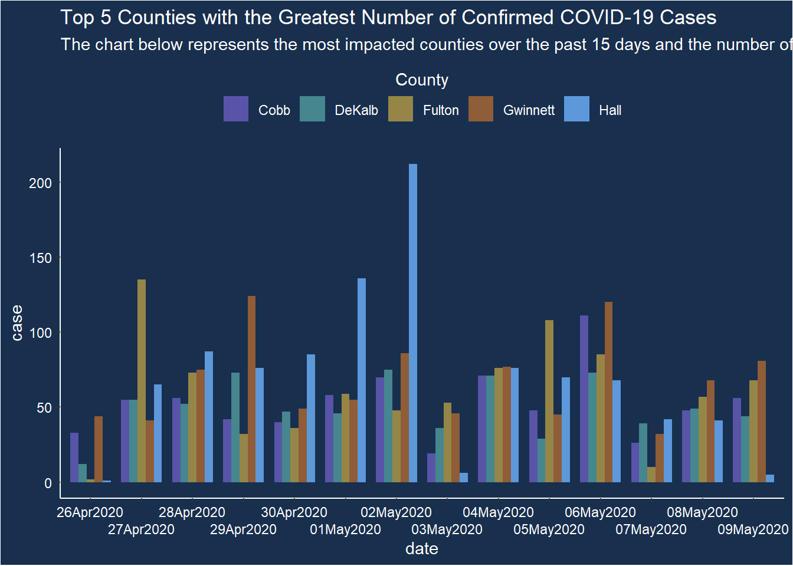

library(tidyverse)
library(ggridges)Misleading Data Visualizations
Programming exercises are designed to provide an opportunity for you to put what you learn in the videos and readings. These exercises feature interactive code chunks using a tool called WebR, which allow you to write, edit, and run R code without leaving your browser.
When the WEBR STATUS says “Ready!”, you can interact with the code chunks!
We invite you to think critically about the ethics questions assocciated with each graph before opening the solution box so you get the most out of this exercise.
Packages
Motivation
Data visualization is a powerful tool used to help a general audience synthesize complex data into a message that is understandable. However, data visualizations that are intentionally or unintentionally misleading can lead an audience to conclusions that are nothing more than fabrications of the truth.
In this programming exercise, we are going to visit data from the Covid-19 pandemic, and work through two different data visualizations, identifying why they are misleading, and how they can be improved.
Kansas Covid
“On August 6, 2020, Rachel Maddow of MSNBC tweeted “Chart: Kansas mask counties versus no-mask mandate counties” (Maddow 2020, August 6) along with a link to a plot (see figure below) created by the Kansas Department of Health and Environment—which was also shared live on The Rachel Maddow Show that same day. The plot compared the number of COVID-19 cases over time for counties in Kansas that had mask mandates versus those that did not” (Engledowl and Weiland 2021)
The data used to create the data visualization can be read in and seen below.

What is misleading about this graph? Why might it be misleading?
Solution
There are two different y-axes. One on the left for the counties with the mask mandate, and one on the right for the counties without a mask mandate. This may be misleading, as someone may not see the additional y-axis on the right side of the graph; line graphs typically do not have two different y-axes.
What trend in these data might someone conclude because of the misleading visualization?
Solution
Based on the misleading visualization, one could come to the conclusion that, the Kansas Covid-19 7 day rolling averages per/100k between the dates of 7/12/2020 through 8/03/2020 decreased to a lower value for masked counties than for counties that did not have the mask mandate
Fixing the graph
Now that we have identified how this graph is misleading, let’s create our own graph that fixes the issue! We are going to use ggplot() to make our new graph. Please see the Function Reference for the different types of geoms we can use. Add the appropriate geom to the plot below to make a line graph.
Solution
We can use geom_line() to create a line graph!
kansas_covid |>
pivot_longer(!date, names_to = "County" , values_to = "cases") |>
mutate(date = as.Date(date, format = "%m/%d/%Y")) |>
ggplot(
aes(x = date , y = cases , color = County)
) +
geom_line()Using our new graph, what proper conclusion can we make?
Solution
Based on our new graph, we can see the Kansas Covid-19 7 day rolling averages per/100k between the dates of 7/12/2020 through 8/03/2020 decreased for the mask mandated counties, and stayed relatively consistent for the non-masked mandated counties. We can also see that within this date range, the non-mask mandated counties had a lower rolling average per/100k than masked mandated counties.
We can add the following lines of code to make the graph even more effective. We are using scale_color_manual() to change the colors of the line assocciated with the County variable; scale_x_date to add date labels to the x-axis; theme to change the angle of the x-axis and the position of the legend; and labs to add a title!
Georgia Covid
Georgia DPH temporarily published the following graph on the COVID-19 Daily Status Report. The data and associated plot can be found below. These data are pulled from the NY Times.

What is misleading about this graph? Why might it be misleading?
Solution
The dates on the x-axis are not in chronological order. This is extremely misleading, and a general audience is going to assume a correct chronological order to the dates from left to right. Further, the order of the counties within date are sorted from highest to lowest, making cross date comparison more difficult for each county.
What trend in these data might someone conclude because of the misleading visualization?
Solution
Based on the misleading visualization, one could come to the conclusion that the trend of Covid-19 cases across these five counties are significantly decreasing each day.
We can use the following code to help make their plot less misleading. In the date variable, we can make sure that the levels go in chronological order using the levels argument in the mutate() function. We will not sort the levels of county within each date to be in decending order, to make comparisons easier.
georgia_covid |>
filter(date >= "2020-04-26", date <= "2020-05-09") %>%
mutate(
date = format(date, "%d%b%Y"),
date = factor(date,
levels = c("26Apr2020", "27Apr2020", "28Apr2020",
"29Apr2020", "30Apr2020", "01May2020",
"02May2020", "03May2020", "04May2020",
"05May2020", "06May2020", "07May2020",
"08May2020", "09May2020"))) %>%
ggplot(aes(x = date, y = case, group = county, fill = county)) +
geom_col(position = position_dodge(), width=.8) +
scale_x_discrete(guide = guide_axis(n.dodge = 2)) +
scale_fill_manual("County",
values = c("#5854A8", "#46868E", "#958648",
"#8F5D37", "#5D98DB"),
guide = guide_legend(title.position = "top",
title.hjust = 0.5)) +
ggtitle(
"Top 5 Counties with the Greatest Number of Confirmed COVID-19 Cases",
subtitle = "The chart below represents the most impacted counties over the past 15 days and the number of cases over time.") +
theme_classic() +
theme(legend.position = "top",
panel.background = element_rect(fill = "#182F4E"),
plot.background = element_rect(fill = "#182F4E"),
axis.line = element_line(color = "white"),
axis.text = element_text(color = "white"),
axis.title = element_text(color = "white"),
legend.background = element_rect(fill = "#182F4E"),
legend.text = element_text(color = "white"),
legend.title = element_text(color = "white"),
title = element_text(color = "white"))
Using our new graph, what proper conclusion can we make?
Solution
Based on the less misleading graph, we can see that the overall trend of cases across the five counties may have gone down, but the rate in which they went down depends on the county. Further, some counties (ex. Hall) show a more cyclic pattern than an overall downward trend.
What are some of your overall takeaways after working with these two misleading graphs?
Takeaways
– We digest information from graphs very quickly. If data are misrepresented, it may not be initially obvious, leading to some making incorrect conclusions.
– Data cane be manipulated based on their axes. If you are creating / consuming graphed information, it’s important to be cognizant of the scale and order in which information on the axes are in.
– Plotting data in a unfamiliar way (ex. having two y-axes) can be misleading, instead of a helpful comparison tool. As a researcher, think critically about how your audience is going scan your visualization.
References
Engledowl, Christopher, and Travis Weiland. 2021. “Data (Mis)representation and COVID-19: Leveraging Misleading Data Visualizations for Developing Statistical Literacy Across Grades 6–16.” Journal of Statistics and Data Science Education 29 (2): 160–64. https://doi.org/10.1080/26939169.2021.1915215.